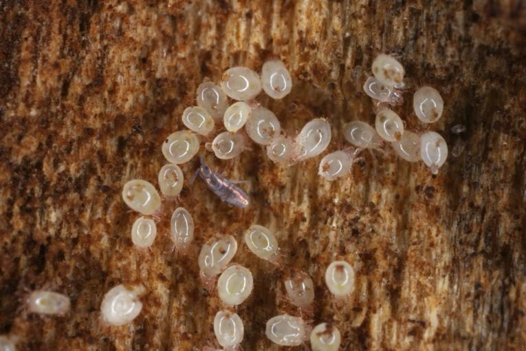
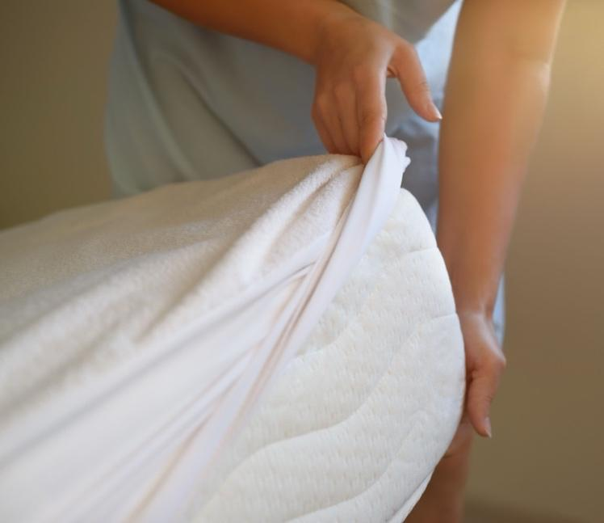

Dust mites are tiny creatures that live in dust. They are too small to see without a microscope. Many people have allergies to dust mites.
Some common reactions to dust mites are sneezing, coughing, a runny nose, or itchy eyes. In people with asthma, dust exposure can increase asthma symptoms. The dust allergy can cause coughing, wheezing, and shortness of breath.
Dust mites are a common allergy trigger in the bedroom, where dust collects on bedding and soft furniture.
Dust mites do not bite or cause other harm to humans outside of allergies. A house does not need to be dirty to have dust mites.

Use allergen-proof covers: Cover your pillow and mattress with special covers that keep dust mites out. The covers will have a label that says they prevent dust mites and allergies.
Wash bedding often: Wash blankets, sheets, and pillowcases in hot water and dry on high heat at least once a week.
Reduce dust: Dust and vacuum your bedroom often. Use a vacuum with a HEPA filter that traps tiny dust mites.
Keep the air clean: Use a HEPA air purifier in your bedroom to remove dust and dust mites from the air.
Declutter: Remove extra pillows, soft curtains, stuffed animals, and other soft items that collect dust.
Keep humidity low: Keep the moisture in your home below 50 percent. You can use a phone app to check indoor humidity. Use a dehumidifier if needed.
Use sealable storage: Store soft items in plastic bins with lids to prevent dust mites from getting inside.

Antihistamines: These medicines help stop sneezing and itchy eyes and nose.
Nasal sprays: Use sprays prescribed by your care team to reduce allergy symptoms inside your nose.
Decongestants: These medicines help clear a blocked nose.
Asthma inhaler: Use inhalers as directed by your care team.
Allergy shots: If your symptoms are severe, your care team might suggest allergy shots. These shots help your body get used to dust mites so you have fewer allergy symptoms over time.
Take your medicines as directed, and keep your bedroom as free of dust mites as possible.
Call your care team if you notice:
Your allergy symptoms get worse or do not get better with medicines.
Your symptoms get worse, and you also have asthma.
You have any changes in breathing.
You develop a fever, or your mucus turns yellow or green.
You have questions about your medicines or how to keep your room dust-free.
Get help right away if:
You have trouble breathing, or your lips or face turn blue.
You feel faint or dizzy and cannot stand.
You feel worse quickly and think it is a severe allergic reaction.
Thank you for trusting us with your care. We are here to support you and want you to feel your best. Contact us with any questions.
IF YOU HAVE A MEDICAL EMERGENCY, CALL 911 OR GO TO THE EMERGENCY ROOM.
The information presented is intended for general information and educational purposes. It is not intended to replace the advice of your health care provider. Contact your health care provider if you believe you have a health problem.
Last updated May 2025
© 2025 Mytonomy, Inc. All rights reserved.